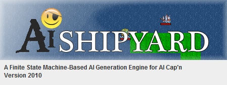
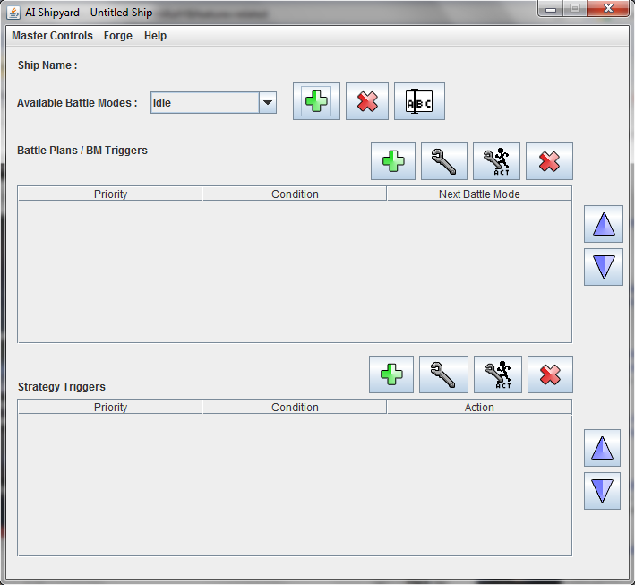
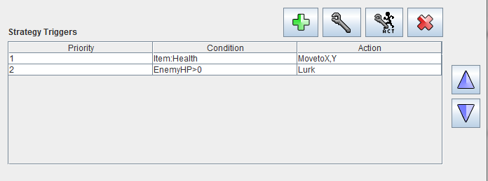
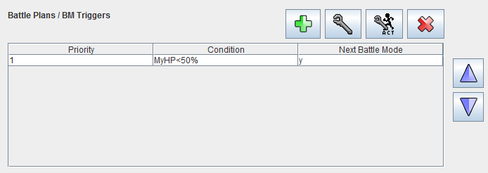
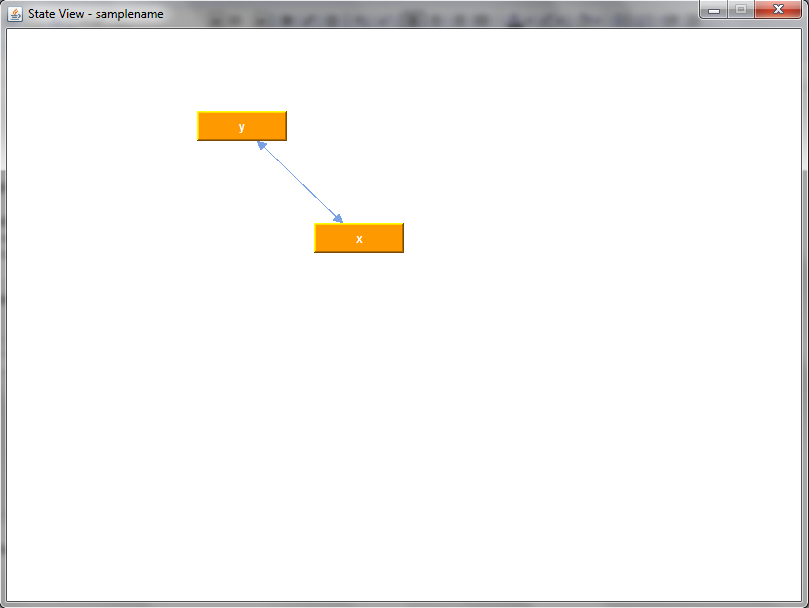
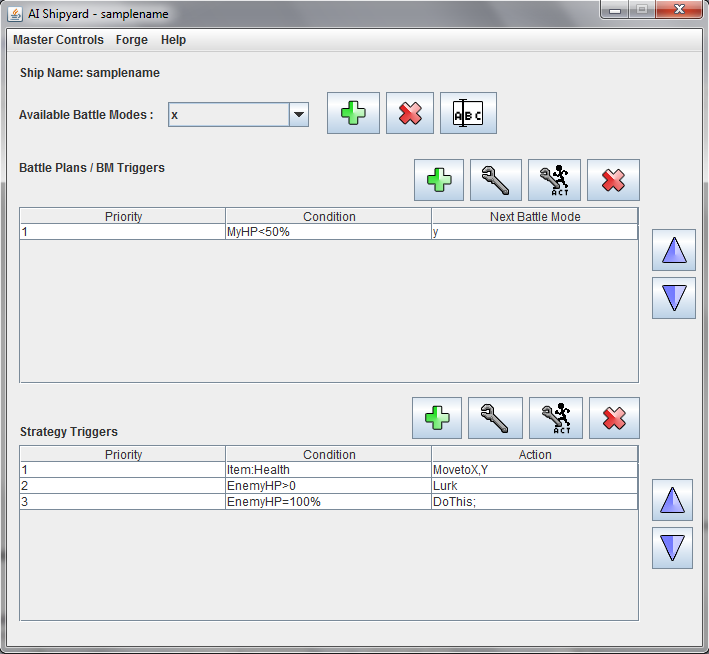

Making A Bot
STEP 1: Initializing the Program

Splash Screen

Main Window
When you first open the program, you'll be greeted by the splash screen, followed by the main window.
At first, only one battle mode, Idle, is on the list. It is the first battle mode to be considered when the bot starts running.
If you start by pressing the Master > New Blueprint, then the Idle Battle Mode will not be there and you'll have to make a new one.
STEP 2: Adding Strategies
Having a bot that does nothing can be boring, so add Strategy Triggers to it.
Strategies are composed of conditions, a target, and a corresponding action and are the actions taken by the bot during gameplay.

STEP 3: Adding Battle Plans
To add more variety and intelligence to your bot, allow it to transfer between Battle Modes.
This way, your bot can adapt to different situations differently depending on what conditions you apply.
You can assign Battle Plans to do so.

All changes in the Battle Plan are graphically represented in the graph, so you can see the finite-state machine of your bot.

STEP 4: Testing Your Bot

Sample Configuration
So you've finally created a good enough bot, huh? Well, what better way to check than test it.
If you happen to have time, you can test your bot against AI or a human-controlled bot.
So feel free to run the debugger and test your bot out!
STEP 5: Exporting Your Bot
When you're satisfied with your bot, you can export it as a java file.
Congratulations on creating your bot!
Copyright © 2010, DGDL/LIC
Created with the Freeware Edition of HelpNDoc: Free CHM Help documentation generator